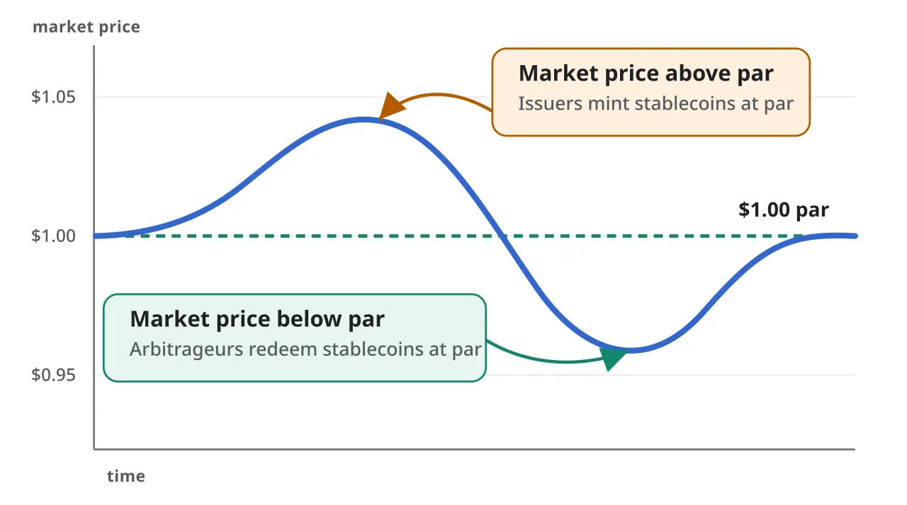

스테이블코인은 이름처럼 가격이 안정되어 보이지만, 실제 신뢰는 준비금과 상환 절차에서 나옵니다. 1달러처럼 쓰인다는 말은 언제든 1달러에 가까운 가치로 되돌릴 수 있다는 믿음을 필요로 합니다. 규제가 이 시장에 들어오는 이유도 바로 이 믿음을 법적 의무로 바꾸기 위해서입니다.
최근 스테이블코인 논의에서 이자 지급 금지와 준비금 요건이 자주 등장합니다. 사용자는 왜 코인을 들고 있는데 이자를 못 받는지 묻고, 발행사는 결제 수단과 투자 상품의 경계를 설명해야 합니다. 이 논쟁의 핵심은 수익률보다 안정성입니다. 결제 수단이 위험한 투자상품처럼 움직이면 위기 때 뱅크런이 생길 수 있습니다.
이 글은 특정 코인이나 프로젝트의 투자 조언이 아닙니다. 스테이블코인을 볼 때는 가격이 1달러 근처에 있는지만 확인해서는 부족합니다. 준비금이 무엇으로 구성되어 있는지, 누가 보관하는지, 언제 공시되는지, 대량 상환 때 얼마나 빨리 현금화할 수 있는지를 봐야 합니다.
1대1 준비금은 출발선입니다

스테이블코인이 안정적이려면 발행량에 맞는 준비금이 있어야 합니다. 현금과 단기 국채처럼 유동성이 높은 자산으로 뒷받침되면 상환 신뢰가 커집니다. 반대로 만기가 길거나 가격 변동이 큰 자산이 많으면 위기 때 손실을 감당하기 어려워집니다.
준비금 공시는 숫자만 많다고 좋은 것이 아닙니다. 어떤 자산인지, 어느 기관이 보관하는지, 담보가 재사용되는지, 감사와 증명이 얼마나 자주 이뤄지는지가 중요합니다. 1대1이라는 문구보다 상환 가능한 자산의 질이 더 큰 신뢰를 만듭니다.
이자 금지는 성격을 가릅니다
스테이블코인 보유자에게 직접 이자를 주면 결제 수단과 예금, 투자상품의 경계가 흐려집니다. 규제당국이 이자 지급을 조심스럽게 보는 이유는 금융 소비자 보호와 은행 시스템 안정 때문입니다. 결제 코인이 수익 상품처럼 경쟁하면 준비금 운용 리스크가 커질 수 있습니다.
물론 시장에서는 우회적인 수익 구조가 계속 나올 수 있습니다. 거래소 보상, 디파이 예치, 제휴 포인트가 사실상 이자처럼 작동할 수 있습니다. 그래서 규제의 초점은 발행사만이 아니라 제휴 구조와 마케팅 문구까지 넓어질 가능성이 큽니다. 이름이 보상이더라도 경제적 효과가 이자라면 감시 대상이 됩니다.
상환 속도가 위기 때 드러납니다
평상시에는 대부분의 스테이블코인이 안정적으로 보입니다. 진짜 시험은 대량 상환 요청이 몰릴 때입니다. 사용자가 동시에 현금화를 요구하면 발행사는 준비금을 빠르게 현금으로 바꾸고, 은행과 결제망을 통해 지급해야 합니다. 이 과정이 늦어지면 가격은 바로 흔들릴 수 있습니다.
상환 속도는 준비금의 유동성과 운영 시스템이 함께 결정합니다. 단기 국채가 많아도 보관 구조가 복잡하거나 은행 접근이 막히면 현금화가 늦어질 수 있습니다. 투자자는 준비금 비율만 아니라 상환 정책, 최소 상환 단위, 처리 시간, 과거 스트레스 상황의 대응을 확인해야 합니다.
결제 인프라가 다음 경쟁입니다
규제가 정리되면 스테이블코인은 투기보다 결제 인프라로 더 자주 평가될 수 있습니다. 국경 간 송금, 온라인 결제, 거래소 정산, 토큰화 자산 결제에서 빠르고 투명한 달러 단위가 필요하기 때문입니다. 이때 중요한 것은 발행량 순위가 아니라 신뢰할 수 있는 연결망입니다.
앞으로 확인할 지점은 발행사 라이선스, 준비금 공시, 은행 파트너, 상환 테스트, 체인별 유동성입니다. 스테이블코인의 미래는 높은 수익률 약속보다 낮은 사고율과 빠른 상환에서 나옵니다. 안정적이라는 이름은 규제 문구가 아니라 위기 때 실제로 지켜지는 절차로 증명됩니다.
발행사의 수익 구조도 살펴볼 필요가 있습니다. 스테이블코인 발행사는 준비금에서 발생하는 이자 수익을 얻을 수 있습니다. 금리가 높을 때는 이 수익이 커지지만, 금리가 내려가면 사업 모델의 여유도 줄어듭니다. 수익이 줄 때도 준비금 안정성을 유지할 수 있는지가 중요합니다.
은행 파트너 리스크도 과소평가하기 쉽습니다. 준비금이 안전한 자산으로 구성되어 있어도 예치 은행이나 수탁기관에 문제가 생기면 상환은 지연될 수 있습니다. 여러 기관에 분산 보관하고, 계좌 구조와 법적 분리를 명확히 하는 이유가 여기에 있습니다.
체인별 유동성도 다릅니다. 같은 스테이블코인이라도 어느 블록체인에서 쓰이는지에 따라 거래 비용, 지갑 지원, 브리지 위험이 달라집니다. 결제용으로 쓰려면 낮은 수수료와 빠른 확정성뿐 아니라 장애가 났을 때 우회할 수 있는 경로가 필요합니다.
규제가 강해지면 작은 발행사는 부담을 느낄 수 있습니다. 감사, 공시, 자본 요건, 컴플라이언스 비용이 늘어나기 때문입니다. 그 결과 시장은 더 큰 발행사 중심으로 재편될 가능성이 있습니다. 이용자는 편리함뿐 아니라 시장 집중이 만드는 새로운 위험도 함께 봐야 합니다.
이용자 입장에서는 스테이블코인을 보관하는 장소도 중요합니다. 개인 지갑에 보관하는지, 거래소에 맡기는지, 디파이 프로토콜에 예치하는지에 따라 위험은 달라집니다. 발행사가 안전해도 거래소나 스마트컨트랙트가 취약하면 손실이 날 수 있습니다. 안정성은 코인 이름 하나로 완성되지 않습니다.
정부와 중앙은행도 스테이블코인을 결제 혁신과 금융 안정 사이에서 봅니다. 빠른 결제와 낮은 비용은 장점이지만, 대규모 자금이 은행 예금에서 빠져나가거나 단기 국채 시장에 쏠리면 새로운 위험이 생길 수 있습니다. 규제는 혁신을 막는 장벽이면서 동시에 대규모 사용을 가능하게 하는 신뢰 기반이 될 수 있습니다.
국경 간 결제에서 스테이블코인이 쓰일수록 각국 규제의 충돌도 늘어납니다. 미국 기준으로 허용된 발행사가 다른 나라에서도 같은 방식으로 받아들여진다고 볼 수 없습니다. 자금세탁 방지, 외환 규제, 소비자 보호, 세금 보고 기준이 다르기 때문입니다. 글로벌 결제 수단이 되려면 기술 연결뿐 아니라 법적 호환성도 필요합니다.
스테이블코인을 자주 쓰는 이용자는 약관도 확인해야 합니다. 발행사가 직접 상환을 허용하는 대상과 거래소를 통한 매도만 가능한 대상은 위험이 다릅니다.
관련 영상
스테이블코인 이자 금지? 진짜 의미는 따로 있다
스테이블코인 규제는 크립토 시장을 작게 만드는 장치로만 볼 필요가 없습니다. 준비금과 상환 기준이 분명해질수록 결제 수단으로 쓸 수 있는 신뢰는 오히려 커질 수 있습니다. 다만 사용자는 이자라는 달콤한 문구보다, 언제든 돌려받을 수 있는 구조인지 먼저 확인해야 합니다.